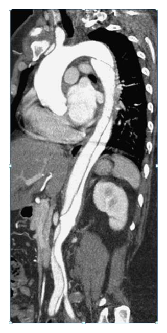
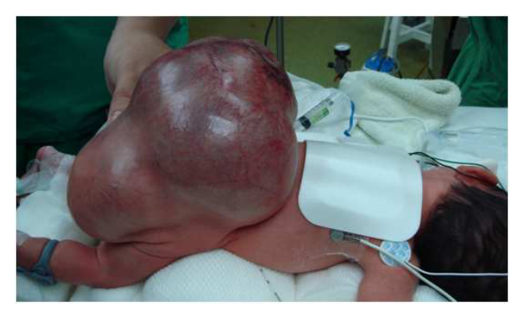
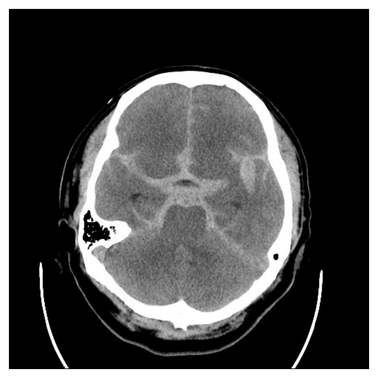
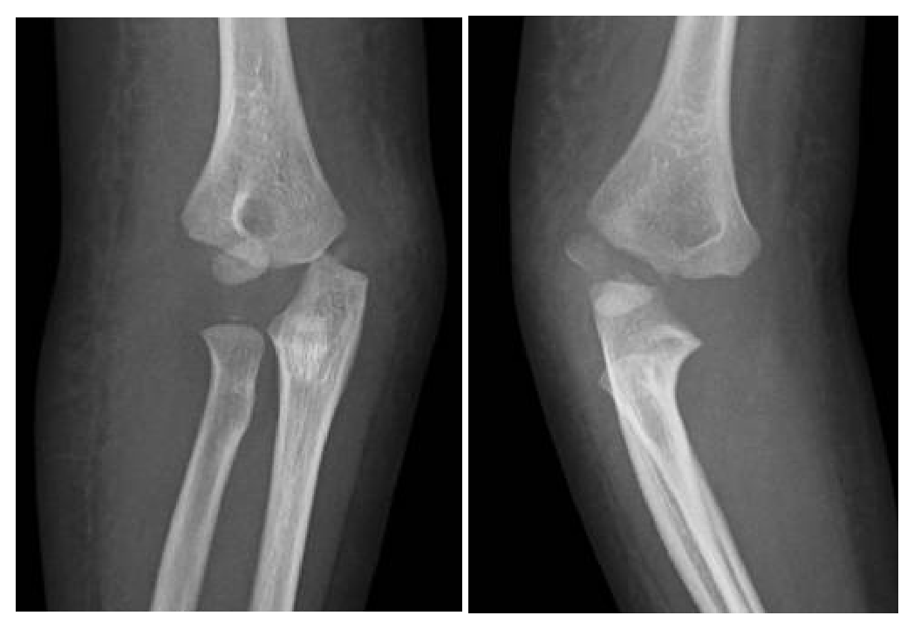
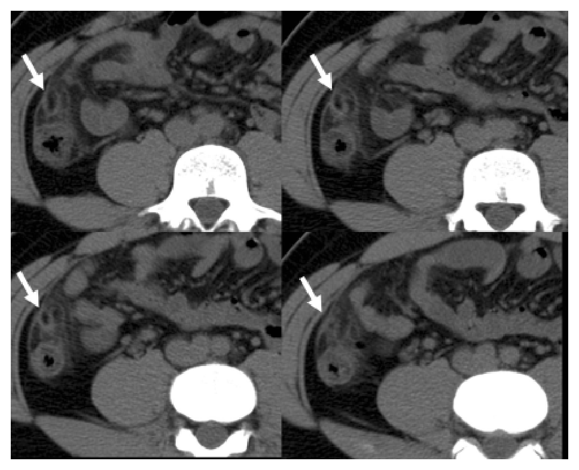
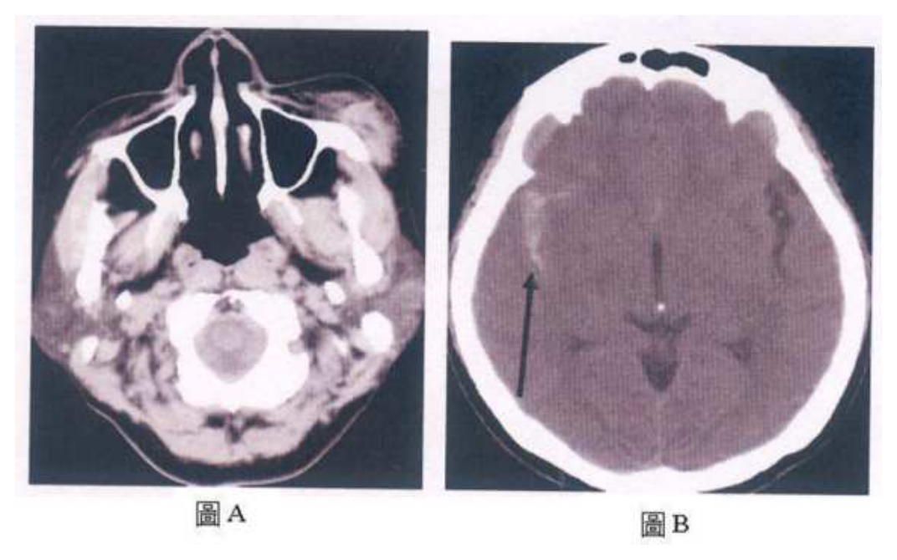

107 年第 2 次醫師醫學（五）（包括外科、骨科、泌尿科等科目及其相關臨床實例與醫學倫理）試題與答案
這一頁是民國 107 年第 2 次醫師醫學（五）（包括外科、骨科、泌尿科等科目及其相關臨床實例與醫學倫理）的整份歷屆試題，共 80 題，題目與標準答案出自考選部「國家考試試題及測驗式試題答案」開放資料。以下逐題列出題幹、選項與答案；要計時作答或記錄成績，請用線上練習。
考選部原始場次代碼：107080
線上作答這一科 →
全部 80 題
第 1 題
aspiration pneumonia對於年長病人而言，是常見的術後合併症；下列對於aspiration pneumonia的敘述，何者錯誤？
- （A）術後aspiration pneumonia發生機率，隨著年齡增加而增加，80歲以上病患的發生率是18至29歲病患的9至10倍
- （B）放nasogastric tube (NG tube)是胃腸道手術前常做的步驟，不會增加aspiration pneumonia的發生機率
- （C）維持年長病患30度至45度upright positioning，可減少aspiration pneumonia的發生機率
- （D）管路進食（tube feeding）前，先評估胃腸道功能或監測gastric residual volume，亦可減少aspirationpneumonia的發生機率
答案：（B）
第 2 題
有關腎臟移植後發生急性排斥的機轉，下列敘述何者錯誤？
- （A）當供體抗原呈現細胞（antigen-presenting cell）上的抗原與受體T細胞上的T細胞接受器結合後，經由細胞內訊息傳遞，活化T細胞核內的轉錄因子，使得受體T細胞活化並產生第二介白素（interleukin-2），此為第一信號（signal 1）
- （B）當供體抗原呈現細胞（antigen-presenting cell）上的CD40與受體T細胞上的CD154接受器結合後會促進T細胞接受器共同刺激因子CD80及CD86與受體T細胞上的CD25接受器結合，然後經由細胞內訊息傳遞，活化T細胞核內的轉錄因子，使得受體T細胞活化並再產生CD154及第二介白素接受器α鏈於細胞膜上，此為第二信號（signal 2）
- （C）第二介白素會與受體T細胞上的第二介白素接受器結合後，可經由活化哺乳動物雷帕黴素靶（mammaliantarget of rapamycin）途徑，使得受體T細胞進行細胞分裂，此為第三信號（signal 3）
- （D）除了受體T細胞活化後會造成移植腎臟發生急性排斥外，受體B細胞亦會經由與供體人類白血球抗原的作用而活化，產生抗體引起急性排斥現象
答案：（B）
第 3 題
有關乳酸林格氏液（lactated Ringer's solution）組成成分，下列何者正確？
- （A）鈉離子130 mEq/L
- （B）鉀離子3 mEq/L
- （C）鈣離子4 mEq/L
- （D）乳酸24 mEq/L
答案：（A）
第 4 題
有關傷口感染之描述，下列何者錯誤？
- （A）傷口感染的病因包括細菌因素，局部傷口因素，病人因素
- （B）清潔傷口術後產生感染的機率為百分之三以下
- （C）預防性抗生素乃使用於清潔傷口之手術
- （D）正常人發生外傷時，每公克組織上的細菌數目大於105個才會造成感染
答案：（C）
第 5 題
一位病人因為單純性闌尾炎（simple appendicitis）接受闌尾切除術，術中並無腸內容物外漏，屬於下列何種手術傷口分類？
- （A）clean
- （B）clean-contaminated
- （C）contaminated
- （D）dirty and infected
答案：（B）
第 6 題
成人急性大量失血2000毫升（ml）以上時，下列何者不是臨床常見之表徵？
- （A）意識焦慮（anxious）及錯亂（confused）
- （B）Pulse pressure上升
- （C）Blood pressure下降
- （D）尿量減少
答案：（B）
第 7 題
有關腹部腔室症候群（abdominal compartment syndrome）之敘述，下列何者錯誤？
- （A）為腹壓上升導致多發器官機能受影響的狀態，一般腹腔手術打開時能緩解
- （B）膀胱內壓力在35 mmHg以上時，需要積極減壓，否則會有機能受損的可能
- （C）太晚減壓，死亡率可能高達七成
- （D）腹腔壓力的表現可由下腔靜脈壓力來表示最為準確
本題送分，無標準答案
第 8 題
相較於靜脈營養，腸道營養對手術病人營養支持之好處，下列何者錯誤？
- （A）吃進去的多醣（polysaccharides）在大腸會被細菌發酵（bacterial fermentation），以維持腸道正常菌落
- （B）嚴重血流動力學不穩定（marked hemodynamic instability）的病人適合給與腸道營養
- （C）有較好的腸胃道免疫功能（gastrointestinal immunity）
- （D）可以維持腸胃屏障功能（gastrointestinal barrier function）
答案：（B）
第 9 題
下列何者最不可能出現在毛毛樣血管疾病（moyamoya disease）？
- （A）雙側顱內內頸動脈狹窄
- （B）腦部出現煙霧狀血管
- （C）顱內血管母細胞瘤（hemangioblastoma）
- （D）顱內動脈瘤
答案：（C）
第 10 題
45歲男性，於首次癲癇發作後被送到急診。核磁共振檢查發現右側額葉有一直徑約4公分，T1 hypo-intense及T2 flair hyper-intense，無明顯對比劑顯影之腫瘤。安排手術切除後，病理切片腫瘤細胞呈現”fried eggpattern”，進一步分析結果發現此腫瘤有1p/19q co-deletion，此腫瘤之最可能的診斷為：
- （A）腦膜瘤（meningioma）
- （B）髓母細胞瘤（medulloblastoma）
- （C）畸胎瘤（teratoma）
- （D）寡樹突神經膠細胞瘤（oligodendroglioma）
答案：（D）
第 11 題
有關頸椎退化性疾病之手術敘述，下列何者錯誤？
- （A）頸椎脊髓病變（cervical myelopathy）產生症狀，即需手術治療
- （B）急性神經根壓迫，可先保守治療
- （C）老年人接受後側椎弓切除術，日後很容易產生脊柱後凸變形
- （D）前頸椎手術可能傷到recurrent laryngeal nerve
答案：（C）
第 12 題
負壓輔助傷口治療（negative pressure-assisted wound therapy, NPWT）是傷口治療方法之一，下列敘述何者錯誤？
- （A）NPWT可以改善傷口微環境（microenvironment），可促進傷口癒合
- （B）NPWT利用機器反覆壓縮放鬆（compression and relaxation）的原理，刺激傷口組織，可增加生長因子的釋放
- （C）NPWT可適用於多種開放性傷口
- （D）NPWT治療，不會改變傷口的面積
答案：（D）
第 13 題
根據Curreri formula，一個50公斤的病人，燒傷面積達70﹪體表面積，一天所需的卡洛里（calorie）約多少大卡（Kcal）？
- （A）3,050
- （B）3,650
- （C）4,050
- （D）4,550
本題送分，無標準答案
第 14 題
關於電擊傷（electrical burns），下列敘述何者正確？
- （A）電流在進入身體後，會走在身體組織中電阻最低的部分，通常是皮膚
- （B）神經是一個電阻相對高的器官，通常較少受到影響
- （C）肌肉受傷後，會釋放出肌蛋白（myoglobulin），會因此造成急性腎損傷（acute kidney injury）
- （D）高壓電電傷，因電壓大，因此較少穿透到深部組織，較少造成深部組織傷害，與家庭用電器產生之電傷相比，較容易誘發心律不整
答案：（C）
第 15 題
植皮依據取皮的厚度有分為全層皮膚移植（full-thickness skin graft）及部分層皮膚移植（split-thickness skingraft），下列何者屬於全層皮膚移植的特性？
- （A）較少的初級收縮（primary contraction）
- （B）較容易存活（graft survival）
- （C）較多的後期收縮（secondary contraction）
- （D）較好的美觀結果
答案：（D）
第 16 題
一位58歲長期在太陽下工作的工人鼻尖出現了一個不會疼痛的硬塊，身體檢查為一個8mm在皮膚表層不會移動的突起腫塊，表面是發亮蠟狀，並可看到表淺的末梢血管擴張現象，而且腫塊突起處有一小潰瘍，經切片證實為皮膚癌，最可能為下列何者？
- （A）基底細胞癌（basal cell carcinoma）
- （B）狀細胞癌（squamous cell carcinoma）
- （C）性黑色素細胞瘤（malignant melanoma）
- （D）默克細胞癌（Merkel cell carcinoma）
答案：（A）
第 17 題
有關顏面外傷與骨折（facial trauma & fracture）的處置，下列敘述何者錯誤？
- （A）前額骨骨折（forehead fracture)要考慮前額竇及顱底是否傷害
- （B）如果有嚴重鼻眼篩（nasal-orbitoethmoid）或顱底骨折應給予鼻氣管插管（nasotracheal intubation）維持呼吸道通暢
- （C）上下頷顎骨骨折病人並不一定要做氣管切開術（tracheostomy），用氣管內管（endotracheal tube）也可維持呼吸道通暢
- （D）下頜骨骨折（mandibular fracture）的處理，強調穩定的內固定及咬合的穩定
答案：（B）
第 18 題
有關嚴重二尖瓣膜逆流（severe mitral regurgitation）之敘述，下列何者錯誤？
- （A）在急性嚴重二尖瓣膜逆流併心臟衰竭時，應考慮提早接受手術治療
- （B）在有症狀之慢性原發性嚴重二尖瓣膜逆流（primary mitral regurgitation）之病患，藥物治療只能改善症狀，無法改變長期預後
- （C）慢性原發性嚴重二尖瓣膜逆流（primary mitral regurgitation）之外科治療，以長期預後而言，瓣膜置換優於瓣膜修補
- （D）對於功能性嚴重二尖瓣膜逆流（functional mitral regurgitation），因屬於左心室功能問題，即使接受外科瓣膜手術後，其預後仍然比原發性二尖瓣膜逆流手術後結果差
答案：（C）
第 19 題
有關二尖瓣嚴重狹窄（severe mitral stenosis）之治療，下列何者錯誤？
- （A）有無徵狀的嚴重二尖瓣狹窄（mitral stenosis）都應該接受介入性的手術治療
- （B）嚴重的二尖瓣狹窄大都以風濕性心臟病（rheumatic heart disease）為主
- （C）利用體外循環之下行二尖瓣膜連合處切開術（open mitral commissurotomy, OMC）是手術選項之一
- （D）當無法實行二尖瓣膜連合處切開術時，二尖瓣膜置換手術（mitral valve replacement）也是外科治療選項之一
答案：（A）
第 20 題
50歲男性病患主訴，有高血壓病史，未接受規則性之治療，3星期前有突發性撕裂性背痛至今仍舊無法緩解。電腦斷層顯示如下圖，下列診斷及治療何者錯誤？

- （A）其主動脈剝離由降主動脈至腹主動脈，但入口位於降主動脈近端處，診斷為史丹佛B型主動脈剝離（Stanford type B）
- （B）需考慮手術治療
- （C）症狀發生超過14天，屬於慢性主動脈剝離
- （D）雖腔內血管修補術式（TEVAR）發展迅速，但手術仍以傳統開胸置換手術為主
答案：（D）
第 21 題
心臟手術時使用的人工心肺機包含下列那些裝置？①熱交換器（heat exchanger） ②主動脈鉗夾（aorticclamp） ③幫浦（pump） ④氧合器（oxygenator）
- （A）①②③
- （B）②③④
- （C）①②④
- （D）①③④
答案：（D）
第 22 題
一位58歲男性因急性胸痛，伴隨冷汗來急診求助，當下安排之檢查，下列何者較不適當？
- （A）胸部電腦斷層
- （B）抽血測心肌酵素
- （C）運動心電圖
- （D）心導管冠狀動脈攝影
答案：（C）
第 23 題
下列何種先天性心臟病，現今仍完全無法以心導管方法（如封堵器 occluder 或線圈 coil）治療？
- （A）肌肉型之心室中隔缺損（muscular type ventricular septal defect）
- （B）心房中隔缺損（atrial septal defect）
- （C）開放性動脈導管（patent ductus arteriosus）
- （D）完全型之心內膜墊異常（endocardial cushion defect, complete form）
答案：（D）
第 24 題
關於縱膈腔腫瘤之臨床症狀及診斷，下列敘述何者錯誤？
- （A）臨床症狀取決於腫瘤位置，大小及惡性程度
- （B）可能會有霍納氏症候群（Horner syndrome）發生
- （C）胸腺瘤可能有重症肌無力症狀
- （D）超過三分之二的病患會有症狀發現
答案：（D）
第 25 題
關於乳糜胸之敘述，何者正確？
- （A）最常發生在左側胸腔
- （B）最常因為腫瘤造成乳糜胸
- （C）不管乳糜胸引流量多寡，結紮胸管手術是治療乳糜胸唯一方式
- （D）假性乳糜胸通常由於類風濕肋膜炎或結核所致
答案：（D）
第 26 題
關於Achalasia之敘述，下列何者錯誤？
- （A）現在的理論是支配lower esophageal sphincter之神經受損所致
- （B）長時間最易引起esophageal adenocarcinoma
- （C）典型症狀為吞嚥困難、食物逆流及體重減輕
- （D）其外科治療主要為esophagomyotomy
答案：（B）
第 27 題
下列對於單一肺結節（solitary pulmonary nodule, SPN）的敘述，何者錯誤？
- （A）肺部內小於2公分的無症狀腫塊（an asymptomatic mass within the lung parenchyma that is less than2cm）
- （B）小於50%是惡性（less than 50% are malignant）
- （C）單一肺結節若具有良性鈣化特徵，通常不需手術治療（patient with benign pattern of calcification doesn'tneed resection of SPN）
- （D）有些單一肺結節無法用楔狀切除（a wedge resection for SPN may not be always possible）
答案：（A）
第 28 題
張先生胸部遭受撞擊，若突然併發有急性創傷後呼吸不足（pulmonary insufficiency）症狀，下列何者是最常見的原因？
- （A）肺挫傷
- （B）氣胸
- （C）肋骨骨折
- （D）成人呼吸窘迫症（ARDS）
答案：（B）
第 29 題
張奶奶已經76歲了，B型肝炎帶原多年，這次被診所醫師發現肝臟有三顆腫瘤，合併有甲型胎兒蛋白（AFP）上升，懷疑是肝癌而住院。抽血報告如下。若考慮為患者進行手術，下列何項措施最不恰當？Hb Platelet PT aPTT張奶奶 10.2 40 16.2 36.4正常值 13.5-17 138-353 9.4-12.5 26-38單位 g/dL 10^3/mL sec sec
- （A）肝癌嚴重，應逕行開刀
- （B）血小板過低，須矯正之
- （C）肝臟手術易出血，要預先準備packed RBC
- （D）PT異常，必須先矯正coagulopathy
答案：（A）
第 30 題
闌尾炎為常見之急性腹症，下列敘述何者不合宜？
- （A）急性闌尾炎為最常見的腹部急症，常好發於老年人及兒童
- （B）麥氏點（McBurney's point) 為右下腹髂前上棘（anterior superior iliac spine）與肚臍連線外三分之一處
- （C）對於沒有發生併發症的急性闌尾炎可以考慮非手術治療，但目前仍以闌尾切除為標準治療
- （D）約有1%的病患為闌尾惡性腫瘤，所以仍須作最後的病理檢查
答案：（A）
第 31 題
下列對於胰臟癌之敘述，何者並不適合？
- （A）胰臟癌好發於胰臟體部，其次為頭和迴溝處（uncinate process）或胰尾；預後與診斷時的腫瘤分期最有關聯
- （B）多層次細切片的電腦斷層為最符合效益的診斷工具，可以幫忙診斷是否有轉移及能否手術
- （C）和其他壺腹周遭惡性腫瘤相比，胰臟癌的預後普遍較同期別的惡性腫瘤為差
- （D）診斷性腹腔鏡可以協助確定是否有腹膜轉移或惡性腹水，對於不確定是否可以切除的病患，建議進行
答案：（A）
第 32 題
下列何者不是胃繞道減重手術（Roux-en-Y gastric bypass）長期術後常見的合併症？
- （A）邊緣性潰瘍（marginal ulcer）
- （B）鐵吸收不良（iron deficiency）
- （C）膽汁逆行性食道炎（bile reflux esophagitis）
- （D）腹腔內腸疝氣（internal hernia）
答案：（C）
第 33 題
有關切除大量小腸後的短腸症（short bowel syndrome），下列敘述何者錯誤？
- （A）切除少於50%的小腸，人體通常多可承受，而不致出現吸收不良的短腸症
- （B）迴盲瓣若有保存，則較不易出現短腸症
- （C）切除空腸（jejunum）比切除迴腸（ileum）較易出現短腸症
- （D）小腸移植是嚴重短腸症的治療選項之一
答案：（C）
第 34 題
膽鹽在那一段腸道會被再吸收，進入腸肝循環（enterohepatic circulation)？
- （A）十二指腸（duodenum）
- （B）空腸（jejunum）
- （C）迴腸（ileum）
- （D）結腸（colon）
本題送分，無標準答案
第 35 題
胰十二指腸切除手術（Whipple operation）切除的部分包含下列何者？①胰頭（pancreatic head） ②脾臟（spleen） ③總膽管下端（distal common bile duct） ④十二指腸（duodenum） ⑤腹腔幹（celiactrunk）
- （A）①②③
- （B）①③⑤
- （C）②④⑤
- （D）①③④
答案：（D）
第 36 題
下列關於甲狀腺手術可能造成的nerve injury，何者錯誤？
- （A）若傷及recurrent laryngeal nerve，會導致聲帶麻痺
- （B）若傷及external branch of superior laryngeal nerve，會導致發高音困難
- （C）手術不易傷及internal branch of superior laryngeal nerve
- （D）若傷及cervical sympathetic trunk，會導致Wermer's syndrome
答案：（D）
第 37 題
一位女性體檢時，意外發現有高血鈣，進一步檢查證實為原發性副甲狀腺功能亢進（primaryhyperparathyroidism），根據目前的治療指引，有些原發性副甲狀腺功能亢進患者即使無臨床症狀亦建議應接受手術，但下列何者除外？
- （A）骨密度檢查T-score小於-2.5
- （B）肌酸酐廓清率（creatinine clearance）小於60 mL/min
- （C）血鈣超過正常值上限1.0 mg/dL以上
- （D）年齡大於60歲
答案：（D）
第 38 題
一位50歲男性因急性心臟衰竭住院，入院時收縮壓為200 mmHg，檢查發現右腎上腺有一5公分腫瘤，臨床醫師懷疑為嗜鉻細胞瘤（pheochromocytoma），下列敘述何者正確？
- （A）收集24小時尿液檢驗兒茶酚胺（catecholamines）和香草扁桃酸（vanillylmandelic acid）來診斷，有很好的特異度（specificity），但敏感度（sensitivity）並不高
- （B）須功能性影像檢查決定腫瘤範圍時，以碘-131碘代膽固醇（131I-iodocholesterol）NP-59掃描為佳
- （C）腎上腺手術前準備藥物，以長效型bisoprolol為首選
- （D）嗜鉻細胞瘤昔稱10%腫瘤，但如今已知約有三分之一的嗜鉻細胞瘤有遺傳性基因突變，例如有SDHB（succinate dehydrogenase B）突變者惡性機會較低
答案：（A）
第 39 題
BRCA 1的基因變異與下列何種乳癌型態最相關？
- （A）管腔A型（luminal A）
- （B）管腔B型（luminal B）
- （C）類基底型（basal-like）
- （D）HER-2過度表現型（HER-2 type）
答案：（C）
第 40 題
針對患有乳癌的病人，做病史及理學檢查的評估，以決定是否為高危險病患時，下列何項不必列入考慮？
- （A）停經在55歲之後
- （B）未產婦（nulliparity）
- （C）曾有甲狀腺病史
- （D）初經小於12歲
答案：（C）
第 41 題
關於身體組織皮瓣移植用來作為乳癌病患手術的重建，下列何者錯誤？
- （A）闊背肌皮瓣（latissimus dorsi）因為解剖位置相近的關係最常被使用
- （B）闊背肌皮瓣可以合併義乳進行重建
- （C）現今手術的技術成熟，大部分的病患可以在手術切除腫瘤，立即進行重建手術
- （D）自體組織皮瓣因為供血的關係，可能有組織壞死（necrosis）的問題
答案：（A）
第 42 題
有關膽道囊腫，下列敘述何者錯誤？
- （A）依Todani分類囊腫型態一共分為五大型
- （B）病人典型的三個症狀是腹痛、黃疸與右上腹摸到腫塊
- （C）手術與否端視病人是否有症狀，無症狀者不必手術
- （D）如果進行手術是做囊腫切除與Roux-en-Y肝管空腸吻合
本題送分，無標準答案
第 43 題
一名個9個月大嬰兒因突發性右側陰囊腫大來急診，經臆斷可能是嵌閉性腹股溝疝氣、睪丸扭轉、睪丸或副睪發炎、或急性陰囊水腫。下列敘述何者錯誤？
- （A）可做陰囊超音波檢查幫助鑑別診斷
- （B）如果是睪丸扭轉，應儘速在扭轉後6小時內手術，約有90%可成功恢復血流
- （C）如果是嵌閉性腹股溝疝氣，無論多久，應儘速在急診就徒手復位
- （D）急性陰囊水腫可以觀察，不用急著手術
答案：（C）
第 44 題
下圖為一個足月的新生女嬰，檢查發現其薦尾椎有一個巨大的腫瘤，下列敘述何者錯誤？

- （A）最可能的診斷為薦尾椎畸胎瘤（sacrococcygeal teratoma）
- （B）不論在懷孕過程或是嬰兒出生之後，都要嚴密觀察嬰兒有無因為此巨大腫瘤產生的盜血現象（tumor-induced vascular steal syndrome）
- （C）需再進一步的安排影像學檢查，如CT或MRI等，以了解除了外部看到的範圍之外，向內延伸到骨盆腔的範圍有多大
- （D）手術的原則是要將腫瘤完全切除，過程中要避免傷害到肛門直腸及周邊的正常結構，並將尾骨保留
答案：（D）
第 45 題
一名5歲大的女童因為頸部中線腫塊，經檢查為甲狀舌骨囊腫（thyroglossal duct cyst）。有關其手術方式（Sistrunk procedure）之描述，下列何者最正確？
- （A）切除囊腫及舌骨中段
- （B）切除囊腫、舌骨中段及相連至舌底部之管道
- （C）切除囊腫、甲狀腺及相連至舌底部之管道
- （D）切除囊腫、舌骨中段及甲狀腺
答案：（B）
第 46 題
關於先天性肺部呼吸道畸形（congenital pulmonary airway malformation）的治療，下列何者比較正確？
- （A）新生兒胸部X光發現右上肺葉有大囊泡狀病灶，出生後即因呼吸衰竭插管治療，應緊急進行開胸手術
- （B）新生兒產前懷疑右下肺葉有實質狀病灶，出生後呼吸平穩，應立即接受肺部電腦斷層檢查
- （C）新生兒產前懷疑左上肺葉有小囊泡狀病灶，於出生後6個月大時接受電腦斷層確診，應於2歲之後再手術
- （D）3個月大男嬰因呼吸急促，經X光及電腦斷層檢查發現左下肺葉多囊泡狀病灶，應安排磁振造影（MRI）確定血管走向
答案：（A）
第 47 題
一名3歲15公斤的男童從6層樓跌落送來急診，生命徵象為心跳160下／分、血壓70/30 mmHg、呼吸30下／分，適當的急救輸液給法為何？
- （A）血漿替代液（Gelofusine）一次300毫升快速滴注，給與一次後若沒有反應即輸血
- （B）新鮮冷凍血漿（fresh frozen plasma）一次300毫升快速滴注，給與一次後若沒有反應即輸紅血球濃厚液（packed RBC）
- （C）林格氏液（Ringer's solution）一次150毫升快速滴注，給與兩次後若沒有反應即輸血
- （D）生理食鹽水（normal saline）一次300毫升快速滴注，給與兩次後若沒有反應即輸血
答案：（D）
第 48 題
15歲男孩因排黏液血便求診，詢問其家族史發現他的父親、叔叔及姑姑皆有大腸息肉或癌症病史，內視鏡發現其大腸約有數百個大小息肉，下列相關敘述何者正確？①致病成因為mismatch repair基因遺傳性突變 ②基因突變位於5q21 ③為顯性遺傳（autosomal dominance） ④此類病人大於50%之比率沒有家族史
- （A）僅①③
- （B）①②③④
- （C）僅①②④
- （D）僅②③
答案：（D）
第 49 題
有關大腸直腸癌的化學治療準則，下列敘述何者錯誤？
- （A）StageⅠ病人術後不需使用術後輔助性化療
- （B）5-fluorouracil-based（5- FU）regimen被建議可用於stageⅡ併有poor prognostic indicator的病人
- （C）FOLFOX regimen可延長stageⅢ病患存活率
- （D）Stage Ⅳ病人RAS mutation對於Anti-EGFR治療有好處
答案：（D）
第 50 題
有關大腸憩室炎（diverticulitis disease）的敘述，下列何者錯誤？
- （A）評估大腸憩室炎的嚴重程度，目前較建議的診斷工具是電腦斷層
- （B）急性大腸憩室炎臨床上可粗略分為非複雜性及複雜性；非複雜性（uncomplicated）可以採保守治療方式
- （C）可建議大腸憩室炎患者在症狀改善後的4～6週接受大腸鏡檢查，藉此確診大腸憩室及排除大腸惡性腫瘤或大腸發炎性疾病之可能性
- （D）一旦患者發生過大腸憩室炎，就必須建議患者接受常規部分大腸切除，以預防下次大腸憩室炎的發作
答案：（D）
第 51 題
下列關於微創手術施行大腸切除的敘述，何者錯誤？
- （A）腹腔鏡輔助大腸切除手術相較於開腹手術，能減少術後疼痛
- （B）腹腔鏡輔助大腸切除手術產生腸繫膜內疝氣（mesenteric internal hernia）的比率約只有1%
- （C）腹腔鏡輔助大腸切除手術施行大腸切除後，一定要手術關閉腸繫膜缺損（mesenteric defect）
- （D）最常見腸繫膜內疝氣的位置在迴腸結（ileocolic junction）附近
答案：（C）
第 52 題
下列何者不是腹腔鏡腹股溝疝氣修補手術（laparoscopic inguinal hernia repair）之優點？
- （A）能在腹膜前腔（preperitoneal space）放置大片人工網膜
- （B）較容易以人工網膜覆蓋肌恥骨孔（myopectineal orifice）
- （C）相較於傳統修補手術，有明顯較低的復發率
- （D）適合治療雙側疝氣或復發性疝氣
答案：（C）
第 53 題
相對於開腹手術，施行腹腔鏡闌尾切除手術（laparoscopic appendectomy）的優點不包括下列何者？
- （A）減少住院天數
- （B）縮短手術時間
- （C）便於發現腹腔內其他可能疾病
- （D）較低傷口感染率
答案：（B）
第 54 題
一糖尿病中年婦女，突然頭部劇痛、左眼瞼下垂、複視、瞳孔放大，來急診求治，神智清楚，腦部電腦斷層如附圖，下列處置何者最恰當？

- （A）住院，馬上安排腦部血管攝影
- （B）抽血密切注意血糖的變化
- （C）住院，檢驗是否有重症肌無力（myasthenia gravis）
- （D）安排腦部核磁共振，再決定是否要住院
答案：（A）
第 55 題
承上題，下列何者是最可能的診斷？
- （A）重症肌無力
- （B）糖尿病神經病變
- （C）後交通動脈瘤破裂
- （D）前交通動脈瘤破裂
答案：（C）
第 56 題
有關多發性骨髓瘤（multiple myeloma）的敘述，下列何者錯誤？
- （A）病理組織下可發現惡性漿細胞（plasma cell）
- （B）X光檢查在頭骨及骨盆可發現多發性鑿孔狀（punched out）骨破壞病灶
- （C）可用骨骼同位素掃描（bone scan）來診斷是否為單一或多發的骨骼侵犯
- （D）已有幹細胞移植成功治療病患的病例
答案：（C）
第 57 題
一位40歲男性發生車禍，造成背部嚴重疼痛。胸腰椎側面X光（lateral view）發現第十一胸椎骨折，且在前後向X光（AP view）發現其雙側椎莖距離（interpedicular distance）變寬。依照X光檢查的發現，下列何者是第十一胸椎的最適當診斷？
- （A）爆裂性骨折（burst fracture）
- （B）壓迫性骨折（compression fracture）
- （C）彎曲牽開性骨折（flexion-distraction fracture）
- （D）骨折脫位（fracture dislocation）
本題送分，無標準答案
第 58 題
針對先天性脊柱側彎（congenital scoliosis）的成因分類中，下列何者彎曲度變大的速度最快、預後最差？
- （A）全分離型半脊椎畸形（free hemivertebra）
- （B）嵌入型半脊椎畸形（incarcerated hemivertebra）
- （C）單側未分段脊節（unilateral unsegmented bar）
- （D）單側未分段脊節加上對側半脊椎畸形（unilateral and unsegmented bar with contralateral hemivertebra）
答案：（D）
第 59 題
下列那一條肌肉不屬於肩關節旋轉肌袖群（rotator cuff）？
- （A）肩胛下肌（subscapularis）
- （B）岡下肌（infraspinatus）
- （C）岡上肌（supraspinatus）
- （D）大圓肌（teres major）
答案：（D）
第 60 題
有關手部屈指肌腱斷裂之治療原則，下列何者錯誤？
- （A）儘量於7天內進行肌腱縫合手術
- （B）六週後幾乎不可能進行直接縫合手術
- （C）若合併指動脈損傷，必須先做動脈吻合，然後再縫合肌腱
- （D）病人術後之復健對功能恢復非常重要
答案：（C）
第 61 題
下列何者不是骨質疏鬆症（osteoporosis）的危險因子？
- （A）酒精過度飲用
- （B）吸菸
- （C）身體質量指數（body mass index）介於22～24公斤／平方公尺
- （D）父母親有髖部骨折史
答案：（C）
第 62 題
4歲小美由床上跌落，由於右肘的疼痛及腫脹，父母帶她來急診求診，並接受右肘部的X光檢查，由此X光影像，顯示此女童發生了何種骨折？

- （A）肱骨髁上骨折（humeral supracondylar fracture）
- （B）肱骨外髁骨折（humeral lateral condyle fracture）
- （C）肱骨內上髁骨折（humeral medial epicondyle fracture）
- （D）尺骨鷹嘴突骨折（ulnar olecranon fracture）
答案：（B）
第 63 題
承上題，針對小美，下列何者是最佳治療？
- （A）冰敷及肩帶固定治療（ice packing and shoulder sling immobilization）
- （B）徒手復位及支架固定治療（closed reduction and bracing）
- （C）徒手復位及石膏固定治療（closed reduction and casting）
- （D）手術復位及鋼針固定治療（open reduction and pinning）
答案：（D）
第 64 題
一位建築工地工人在工作中由二樓摔到地面，骨盆著地，被緊急送往醫院。病人血壓穩定，心跳快速，下腹疼痛併尿滯留，下列何者錯誤？
- （A）病人之尿道開口有血時，必須要排除尿道受傷的可能
- （B）骨盆骨折常併有膜部尿道（membranous urethra）受傷
- （C）膜部尿道（membranous urethra）受傷後，肛門指診時，前列腺可能會移位
- （D）跨騎受傷（straddle injury）時，膜部尿道（membranous urethra）容易受傷
答案：（D）
第 65 題
有關家族性腎細胞癌（familial renal cell carcinoma）之敘述，下列何者錯誤？
- （A）von Hippel-Lindau disease和 familial papillary renal cell carcinoma是較常見的臨床疾病
- （B）亮細胞型腎細胞癌（clear cell renal cell carcinoma）為常見的腎臟癌類型
- （C）von Hippel-Lindau disease主要臨床表現有腎細胞癌，嗜鉻細胞瘤（pheochromocytoma），視網膜血管胚細胞瘤（retinal hemangioblastoma）等
- （D）von Hippel-Lindau disease的病人好發於70歲，約有一半會發生腎細胞癌，有時會有雙側腎臟侵犯
答案：（D）
第 66 題
一位70歲男性膀胱癌病人，接受經尿道膀胱腫瘤切除術（TUR-BT），術中發現只有1個約1公分之腫瘤，病理切片是移形細胞癌（transitional cell carcinoma）grade I，期別是Ta，下列手術後處置何者正確？
- （A）需要接受膀胱內卡介苗（BCG）灌注輔助治療
- （B）需要接受膀胱內化學藥物灌注輔助治療
- （C）不需要接受任何膀胱內化學藥物或 BCG 灌注輔助治療
- （D）需要接受放射輔助治療
本題送分，無標準答案
第 67 題
中風病人最常見的排尿障礙為何？
- （A）膀胱無收縮力
- （B）膀胱頸功能阻塞
- （C）尿道外括約肌共濟失調
- （D）逼尿肌反射亢進
答案：（D）
第 68 題
對一位C5～C6完全性脊髓損傷導致逼尿肌尿道外括約肌共濟失調（detrusor sphincter dyssynergia，DSD）的病人，下列何種處置不合適？
- （A）間歇性導尿以定時排空膀胱
- （B）口服抗膽鹼藥物以降低膀胱內壓
- （C）當測得漏尿壓力為20 cmH2O時，可以進行尿道外括約肌切開術（sphincterotomy）以保護腎臟
- （D）置放尿道支架（urethral stent）以方便排空膀胱
答案：（C）
第 69 題
有關磷酸二酯酶（phosphodiesterase）抑制劑，治療男性勃起功能障礙的機轉，下列何者正確？
- （A）Sildenafil（Viagra）主要作用是抑制磷酸二酯酶第6及11型
- （B）磷酸二酯酶第5型促使環磷酸腺苷（cAMP）代謝為5'環磷酸腺苷（5'AMP）
- （C）可直接引發勃起機制
- （D）不能與硝酸鹽藥物（nitrates）同時服用
答案：（D）
第 70 題
有關小孩包皮的敘述，下列何者正確？
- （A）為了預防癌症，減少尿路感染，最好每位小孩都施行包皮環切術
- （B）在3歲時，大約90%未接受包皮手術的小孩都可以有自然包皮退下的機會
- （C）包皮手術簡單安全，因此不會造成任何併發症
- （D）使用類固醇局部塗抹，無法有效使包皮環變鬆而自然退下
答案：（B）
第 71 題
下列有關夜間陰莖膨脹測驗（nocturnal penile tumescence）結果的判讀，何者錯誤？
- （A）健康男人一晚有三至五次勃起
- （B）勃起多發生在快速動眼期（rapid eye movement stage）
- （C）如果一個病人整晚都無勃起現象，即為器官性陽痿
- （D）勃起硬度達90%以上，持續一小時，即可診斷為器官性勃起功能正常
答案：（C）
第 72 題
關於食道癌（esophageal carcinoma），下列何者錯誤？
- （A）95%為腺癌（adenocarcinoma）
- （B）可分為腫塊型、潰瘍型及浸潤型
- （C）早期病灶呈小型斑塊或表淺不規則潰瘍
- （D）Plummer-Vinson氏症候群病患，發生食道癌之機率較常人高
答案：（A）
第 73 題
32歲男性病人右下腹痛2天，來到急診，身體檢查有明顯局部壓痛，白血球在正常值內但略偏高，C-reactiveprotein上升。未注射顯影劑的電腦斷層如圖示，下列何項診斷最有可能？

- （A）epiploic appendagitis
- （B）acute ileus
- （C）ascending colon intusussception
- （D）colon cancer with perforation
答案：（A）
第 74 題
34歲男性，車禍外傷，劇烈頭痛，意識混亂，CT影像圖A可見左臉頰腫脹，根據圖B箭頭所指的是：

- （A）contusion parenchymal hemorrhage
- （B）traumatic subarachnoid hemorrhage（SAH）
- （C）thin layer acute subdural hematoma（SDH）
- （D）traumatic pneumoencephalus
答案：（B）
第 75 題
一位32歲女性，體重60 kg，騎機車不慎被貨車撞到造成腹內出血，送至急診時初步檢查為心縮壓（systolicblood pressure）正常，但脈搏壓（pulse pressure）明顯下降，且心跳112下/分，尿量20-30 ml/hour。此病人約流失多少血液？
- （A）500 ml
- （B）700-1100 ml
- （C）1300-1700 ml
- （D）1900-2300 ml
答案：（B）
第 76 題
闌尾炎術後最常發生的併發症為何？
- （A）肺炎
- （B）尿道感染
- （C）腸皮下瘻管
- （D）皮下和腹腔內的感染
答案：（D）
第 77 題
一位30歲的男性工人從6公尺高的鷹架墜落，身體檢查顯示收縮壓120 mmHg，右胸有明顯的連迦胸（flailchest），嚴重的呼吸窘迫（severe respiratory distress），右胸呼吸聲音稍微降低，叩診時則左右兩側類似。給予非再呼吸型面罩氧氣15 L/min後，其動脈氣體分析為pH：7.47，PaO2：65 mmHg，PaCO2：28mmHg；下列何者最可能解釋他的異常動脈氣體分析之原因？
- （A）疼痛
- （B）合併腹部創傷
- （C）心包膜積血
- （D）肺挫傷
答案：（D）
第 78 題
某醫院因為經營困難，要購買新的碎石機卻缺乏經費，於是鼓勵該院的泌尿科醫師投資買機器，醫院的說詞是醫師如果對業績有信心，投資機器也會賺錢，是醫院和醫師雙贏，這樣作法的潛在倫理問題是為何？
- （A）會有利益衝突的問題
- （B）會有健保核刪的問題
- （C）會有執業執照的問題
- （D）會有輻射防護的問題
答案：（A）
第 79 題
有關醫療錯誤的告知，下列敘述何者錯誤？
- （A）通常對醫師而言，坦承自己的醫療錯誤是一件困難的事
- （B）最好是率先告知醫療錯誤，不要等病人問了再說
- （C）對於病人或家屬強烈的情緒反應，要有心理準備
- （D）只要承認醫療錯誤，就等於有醫療過失
答案：（D）
第 80 題
一位84歲男性病患於幾年前罹患腦中風之後，長期臥床，常常有呼吸道感染或泌尿道感染。最近幾天病患開始出現發燒及腹瀉等現象。於急診經檢查確定為偽黏膜性大腸炎，醫師開始使用抗生素治療，但治療幾天後，症狀一直沒有具體改善。這時家屬詢問國外研究顯示，偽黏膜性大腸炎可以使用糞便移植治療，不知道醫師是否會考慮這種治療？經查詢相關文獻，發現該文獻的證據等級為Ib，證據等級相當高，但該療法並非台灣對於偽黏膜性大腸炎的常規治療。下列敘述，何者錯誤？
- （A）依據實證醫學的理念，應該依據最新最好的證據來治療患者。本案中，既然該文獻的證據等級為Ib，屬於證據等級很高的文獻，可依照此治療方式來治療患者
- （B）雖然該文獻證據等級很高，但並沒有本土相關文獻的證據，該文獻的結果是否可以應用於國內的患者，容有疑慮，應該有更多本土證據支持後，才較為可信
- （C）不論證據等級高低，只要是新的治療方法，都必須經過衛生福利部核准後，進行人體試驗加以檢驗其治療效果以及治療相關安全性之後，才能應用於臨床患者
- （D）臨床上，醫師有遵從醫療常規來治療病患的義務。但並沒有遵從最新最好的證據等級之文獻來治療患者的義務
答案：（A）
其他年度
回到醫師醫學（五）（包括外科、骨科、泌尿科等科目及其相關臨床實例與醫學倫理）的年度總覽，
或到醫師題庫首頁看其他科目。
題目與標準答案出自考選部「國家考試試題及測驗式試題答案」開放資料。依中華民國《著作權法》第 9 條第 1 項第 5 款，
依法令舉行之各類考試試題不得為著作權之標的，得自由利用。詳解為 AI 整理的學習輔助，
並非官方標準答案；中華民國法規會修訂，引用前請對照現行版本查證。